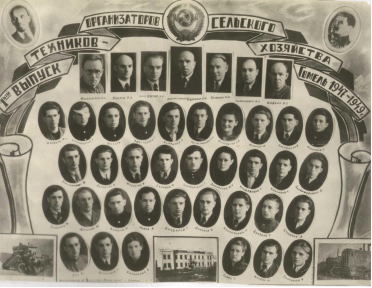
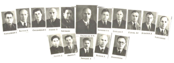

Историческая справка
 Среднее сельскохозяйственное учебное заведение в г.Гомеле, на базе которого в последствии организован сельскохозяйственный техникум, образованно в ноябре 1947 года. Занятия начались с 1 января 1948 года. Это была Государственная сельскохозяйственная школа по подготовке руководящих кадров колхозов с контингентом обучающихся 300 человек. Выпускникам школы присваивалась квалификация техника – организатора сельскохозяйственного производства.
Среднее сельскохозяйственное учебное заведение в г.Гомеле, на базе которого в последствии организован сельскохозяйственный техникум, образованно в ноябре 1947 года. Занятия начались с 1 января 1948 года. Это была Государственная сельскохозяйственная школа по подготовке руководящих кадров колхозов с контингентом обучающихся 300 человек. Выпускникам школы присваивалась квалификация техника – организатора сельскохозяйственного производства.
Школе городом выделены помещения по улице Пролетарская, 39 для учебных занятий и по улице Советская, 32 под общежитие учащихся. Среднее сельскохозяйственное учебное заведение в г. Гомеле, на базе которого в последствии организован сельскохозяйственный техникум, образованно в ноябре 1947 года. Занятия начались с 1 января 1948 года. Это была Государственная сельскохозяйственная школа по подготовке руководящих кадров колхозов с контингентом обучающихся 300 человек. Выпускникам школы присваивалась квалификация техника – организатора сельскохозяйственного производства.
Школе городом выделены помещения по улице Пролетарская, 39 для учебных занятий и по улице Советская, 32 под общежитие учащихся. Одновременно организовано и учебно-опытное хозяйство на территории совхоза «Титенки» Гомельского района в соответствии с типовым оборудованием, утвержденным союзным правительством (около 200 га сельскохозяйственных угодий, сад, огород, рабочие лошади, коровы, свиньи, птица, производственные, обслуживающие и жилые помещения, необходимый инвентарь).
В школу подбирались и направлялись по путёвкам райисполкомов председатели колхозов, бригадиры и другие работники со стажем работы не менее трех лет и зарекомендовавшие себя на руководящей работе. Учащимся школы выплачивалась стипендия в сумме 200 рублей и предоставлялось бесплатно общежитие.
Школой подготовлено около тысячи организаторов сельскохозяйственного производства.
В мае 1951 года в соответствии с постановлением Совета Министров СССР Гомельская Государственная двухгодичная школа по подготовке руководящих кадров колхозов реорганизована в среднюю сельскохозяйственную школу по подготовке председателей колхозов с трехлетним сроком обучения и планом приема 70 человек. Выпускникам присваивалась квалификация младшего агронома. Часть из них направлялась на руководящую работу в колхозы, остальные на должности специалистов сельского хозяйства.
Школой подготовлено более 250 младших агрономов.
Параллельно велась курсовая переподготовка руководящих кадров колхозов области.
Повышение статуса
 В июле 1956 года во исполнение постановления Совета Министров БССР о более полном удовлетворении сельского хозяйства специалистами и улучшении качества их подготовки, министерство сельского хозяйства Республики провело реорганизацию сети учебных заведений.
Гомельская средняя сельскохозяйствен-ная школа по подготовке председателей кол-хозов преобразована в Гомельский сельскохо-зяйственный техникум агрономического про-филя с планом приема учащихся 120 человек.
В июле 1960 года Министерство сель-ского хозяйства БССР в соответствии с Постановлением ЦККПБ и СМ. БССР провело новую реорганизацию сети средних специальных сельскохозяйственных учебных заведений республики.
Смена имени
Vestibulum at hendrerit ipsum. Fusce sit amet nibh velit, vel accumsan justo. Sed mi ligula, pellentesque varius pretium et, bibendum non metus. Vestibulum vitae libero tortor, eu ullamcorper urna. Duis aliquam risus eu orci tristique non dictum sem feugiat. Nullam leo nibh, iaculis ac commodo ut, elementum vel tellus. Nunc vehicula, mi non pharetra condimentum, magna tellus rutrum quam, sit amet ultricies enim ipsum vitae urna. Etiam ac arcu velit, in sagittis tortor.
Aliquam augue tellus, accumsan ut eleifend vitae, vehicula sed nulla. Nam vel orci risus, in imperdiet turpis. Ut aliquam tortor vitae augue ultricies hendrerit. Vivamus vel gravida lectus. Class aptent taciti sociosqu ad litora torquent per conubia nostra, per inceptos himenaeos. Quisque elit tellus, eleifend ut fringilla quis, venenatis vel velit. Suspendisse quis interdum lorem.